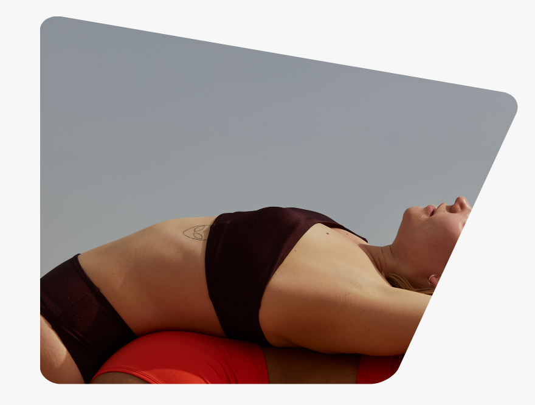
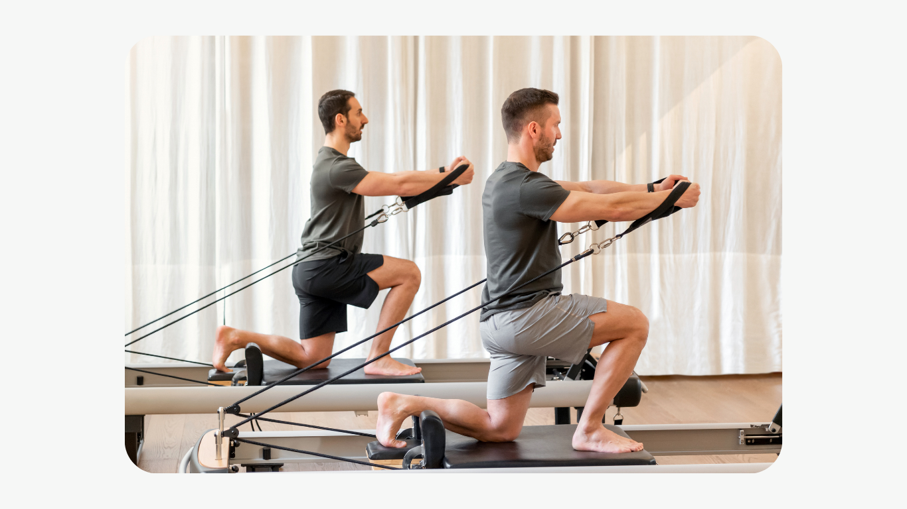

Assim como eu.

O pilates é uma prática de exercícios que busca o equilíbrio entre corpo e mente, por meio de movimentos controlados, respiração e concentração. Ele ajuda a melhorar a postura, a flexibilidade e a força, além de contribuir para o bem-estar físico e mental. Pode ser praticado por pessoas de todas as idades, sendo muito utilizado tanto para condicionamento quanto para reabilitação.

Veja abaixo as mudanças positivas que o pilates trás em sua vida:
O Pilates ajuda a reduzir o estresse, o que contribui positivamente para a saúde física e mental, melhorando a qualidade de vida.
O Pilates melhora a postura ao fortalecer os músculos, ajudando no alinhamento corporal e corrigindo problemas posturais.
O Pilates pode aumentar a disposição, já que a falta de atividade física contribui para o cansaço e a desmotivação, e a prática ajuda a combater isso.
O Pilates reduz o risco de lesões ao melhorar alongamento e fortalecimento muscular, beneficiando tanto praticantes de atividades físicas quanto pessoas sedentárias.